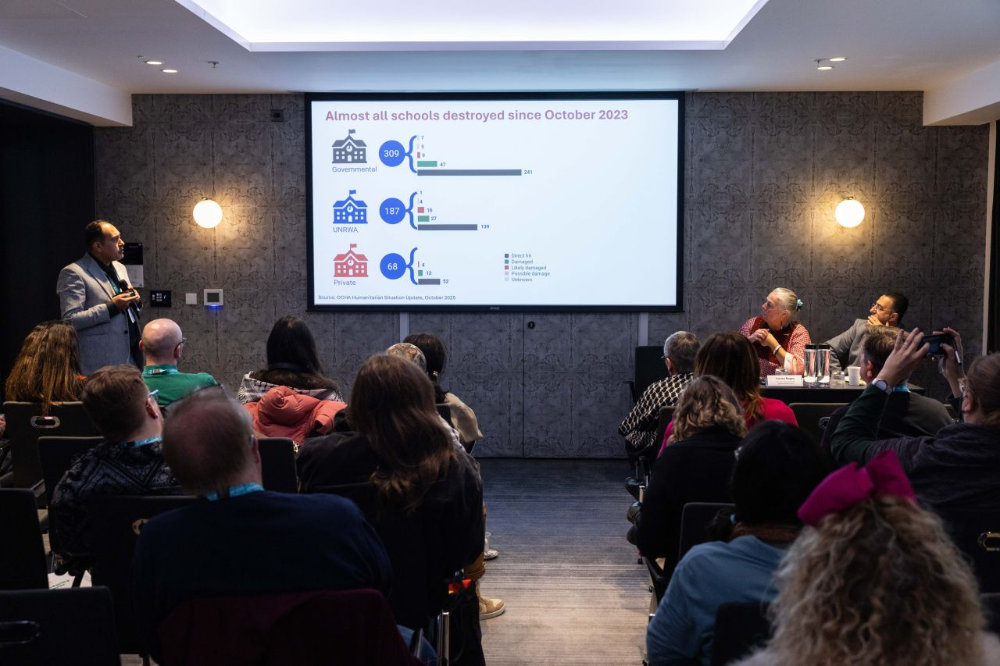
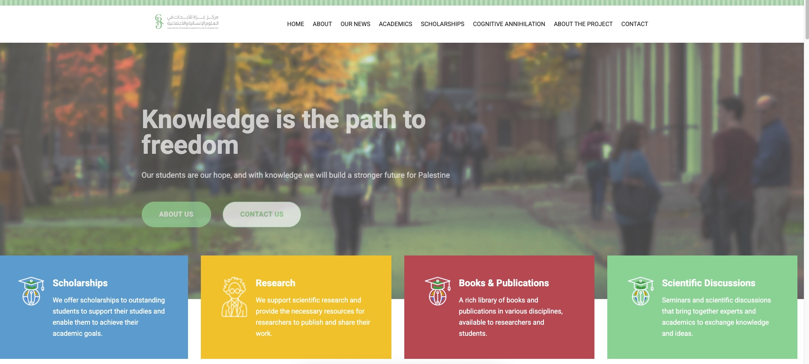

News & Engagement
News & Engagement
Conference presentations and participation, symposium organisation, invited talks, policy engagement and academic networks. Entries are drawn from the verified academic record and listed in reverse chronological order. Academic publications are listed separately on the Publications page.

Featured engagement
London
Mohammedwesam Amer Participates in NEU International Conference on Education, War, and Global Solidarity
Engagement archive
- Conferences & Events
- Invited Talks
- Institutional Engagement
- Research & Public Dialogue
- Media & Commentary
-
Invited Speaker
London
Mohammedwesam Amer Participates in NEU International Conference on Education, War, and Global Solidarity
-
Co-Organiser
Hypermedia Warfare and Techno-Legal Entanglements Symposium, Cambridge Digital Humanities, King's College, Cambridge, United Kingdom.
-
Presenter
76th Annual ICA Conference, Cape Town, South Africa.
Dr. Wesam Amer participated in the International Communication Association (ICA) 2026 Conference in Cape Town, South Africa, presenting three research papers on the destruction of knowledge, media, and intellectual life in Palestine. His presentations contributed to international debates on communication, journalism, academic freedom, and the protection of knowledge during conflict.
ICA 2026 conference page → ICA 2026 programme → Full record →

76th Annual ICA Conference, Cape Town, June 2026. -
Founder
The Gaza Centre for Research in Humanities and Social Sciences.
An interdisciplinary initiative integrating humanities, social sciences, digital humanities and emerging technologies to address Palestinian, regional and global challenges.

-
Invited Panel Participant
Future of Journalism Conference, Cardiff University, United Kingdom.
-
Workshop Trainer
Synthetic Influence: Generative AI, Representation, and Bias in Political Communication and Computational Propaganda, Cambridge Social Data School, Cambridge Digital Humanities, United Kingdom.
-
Keynote Speaker
UN Support Mission in Libya Seminar Series for Media Professionals and Students.
-
Head of Scientific Committee and Keynote Speaker
Media and the Palestinian Issue Amidst Digital Transformation: Reality and Prospects for the Future, Palestine Technical University.
-
Keynote Speaker
Religious Discourse in Wartime: Analysing Hamas's Military Media Strategy, American Academy of Religion Conference.
-
Keynote Speaker
War and Media Disinformation Campaigns in the Israeli War on Gaza Since October 7th, American University in Cairo.
-
Technical Group Member
Palestinian Armistice Plan.
Translating academic research into outputs for policymakers, NGOs, journalists, media organisations and civil-society actors through policy briefings, academic outreach, public lectures and media contributions on digital and conflict communication, political discourse, AI, media governance and peacebuilding.
-
Conference Chair
The Palestinian Media in the Heart of the Storm: One Year Since the Assassination of Journalist Shireen Abu Akleh, Gaza University.
-
Founder and CEO
Media Access Centre for Media Relations and Studies, Palestine.
Media research, communication consultancy, training and public engagement. The recorded end date in the academic record (31/11/2023) is not a valid date and is under verification.
-
Conference Chair
Media and the Palestinian Cause: Reality and Expectations, Gaza University.
-
Founder and First Chair
Middle East Chapter, Marie Curie Alumni Association.
Establishing and coordinating an international research network connecting researchers across Europe and the Middle East.
-
Reporter and Correspondent
Paydesk UK, Hamburg, Germany.
Reporting on international political events, including the G20 Summit, for international media outlets and agencies.
-
Co-Founder
Mashahid Company for Media Production and Training, Gaza.
Media-production and professional-training activities for journalists and communication practitioners.
-
Peer Review and Advisory Service
- Palgrave Communications
- Australian Journal of Linguistics
- Critical Discourse Studies
- Social Media + Society
- Journalism
- Journal of Discourses (Majalat Khitabat)
- Newton Prize, UK National Commission for UNESCO